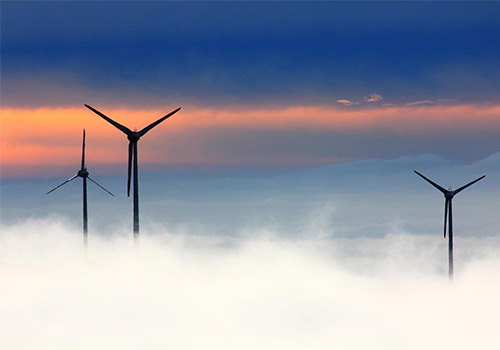
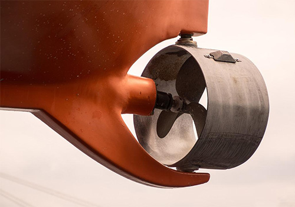
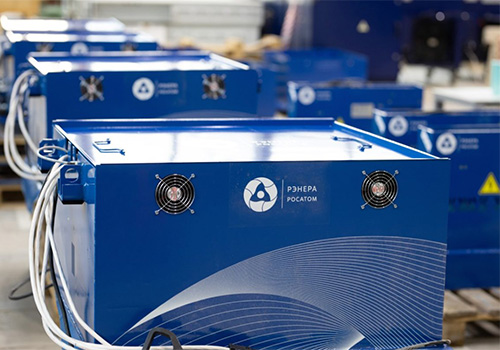
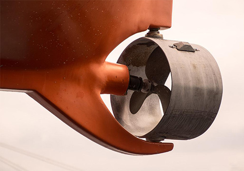
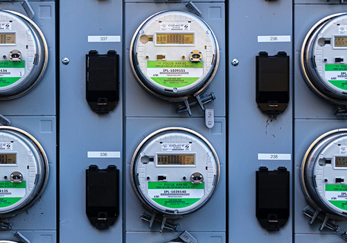
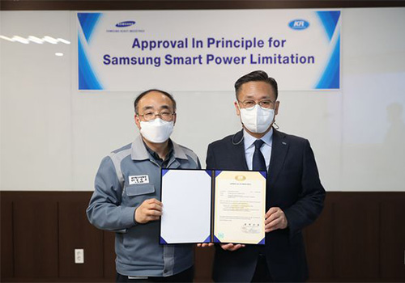
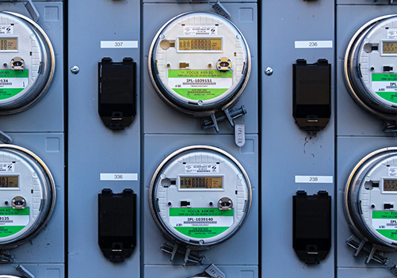
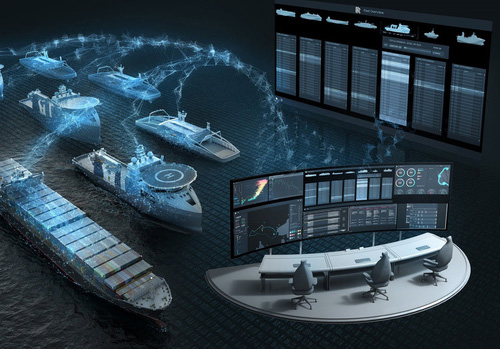

home>조선해양>솔루션
솔루션
- We Provide Solutions
- 삼성중공업은 급변하는 시장 환경 속에서 선사, 조선소, 기관 등 다양한 고객의 요구사항을 만족시킬 수 있도록 축적된 기술, 풍부한 건조 경험 및 설계 전문지식을 기반으로 기존 선박 건조 사업을 넘어서 Beyond Shipbuilding 고객이 원하는 모든 분야에서 통합 솔루션을 제공합니다.

Green Solution
변화는 이미 시작되었고 우리는 탄소중립을 위한 긴 여정 중에 있습니다. IMO는 기존 신조선에 적용하던 에너지 효율 규제(EEDI)를 현존선으로 확장(EEXI)하고 운항선의 탄소집약도를 저감하는 규제(CII)의 시행을 목전에 두고 있습니다. 이제 탄소중립은 조선해양 산업이 나아가야 하는 변화의 큰 축이 되었습니다.
-
-

- EEXI/CII Solution
- EEXI/CII 규제 대응을 위한 토탈 솔루션 SSPL(Samsung Smart Power Limitation) 삼성중공업은 EEXI/CII 규제 대응을 위하여 스마트 엔진 출력 제한 시스템(SSPL)을 개발하였습니다. SSPL은 EEXI 규제에서 요구하는 엔진 출력 모니터링 및 제어·관리 기능의 제공을 통하여 탄소 배출을 줄일 수 있는 솔루션입니다.
- SSPL은 선박에 설치된 Shaft Torque-meter 또는 엔진으로부터 출력을 계측하여 모니터링하며 BMS 연계 시스템을 통하여 설정된 출력 이하로 엔진 출력을 제한합니다. 또한, 효율적인 규제 대응을 위하여 데이터 자동 기록 장치, 육상 전송, OMM 리포트 생성, CII 등급 계산 및 리포팅 등 각종 편의 기능을 제공합니다.
-

- ESD(Energy Saving Device)
- 탈탄소 규제 대응과 연료소모량 저감을 위한 에너지 효율 개선 장치 해운산업의 화두로 떠오르고 있는 탈탄소 가속화에 대응하기 위해서는 최적의 추진 성능과 높은 운항 효율을 갖춘 선박이 필요합니다. 삼성중공업은 기존 선박 건조를 통해 축적된 기술/경험을 바탕으로 선박 운항 효율을 향상시킬 수 있는 다양한 에너지 저감장치를 제공하고 있습니다. CFD 해석을 통해 선종별 최적 ESD 조합을 제공하며, 신조 뿐만 아니라 개조에서도 고객의 요구를 만족시킬 것입니다.
-

-
-

- ESS(Energy Storage System)
- 선박 리튬 이온 배터리 시스템 선박/해양 산업을 위해 삼성SDI의 리튬 이온 배터리를 탑재한 ESS를 자체적으로 개발 했습니다.
- 효율적인 작동으로 가동 발전기 수를 줄일 수 있으며, 부하 변동 및 연료소비를 감소시켜 선박의 전력 안정성을 향상 시킬 수 있습니다. 본 시스템은 Propagation test, Overcharge with voltage, Electrical power supply failure test 등 31가지의 시험항목을 거쳐 DNV-GL 형식 승인을 받았습니다. 뿐만 아니라 순수 전기 추진 시스템을 위하여, 높은 에너지 밀도와 향상된 화재안전 시스템이 적용된 차세대 배터리 시스템을 개발하고 있습니다.
-

- Energy Transition
- 친환경 연료 선박으로의 패러다임 전환 IMO의 장기적 목표인 온실가스의 획기적 감축을 위하여 친환경 선박으로의 전환은 불가피합니다.
- 고객 및 제작사와 공동으로 개발-실증-실선화까지 일괄 수행 프로세스를 구축하여 Energy Transition 기술을 선도하고 있습니다. 2019년 완공된 LNG 실증 설비를 시작으로 암모니아, 이산화탄소 포집, 수소 실증 설비를 단계적 증설하여 글로벌 친환경 연료 선박에 대한 핵심 기술 개발 및 검증을 수행 할 것입니다. 삼성중공업은 친환경 연료의 선구자로 시장 요구에 대응하는 최적의 친환경 연료 솔루션을 제공하겠습니다.
-

Digital solution
변화는 새로운 솔루션을 필요로 합니다. 고객은 임박한 규제를 대비하기 위하여 EPL/SHaPoLi와 같이 지금 당장 적용 가능한 규제 대응 솔루션이 필요합니다. 또는, 현재 보유하고 있는 선대의 에너지 효율을 개선하기 위해 최신 디지털 솔루션의 도입을 원하고 있거나 이보다 긴 안목에서 무탄소 솔루션으로의 에너지 전환을 통한 전체 선대 교체 준비를 원하고 있을 수도 있습니다.
-

- SVESSEL
- 스마트 선박 종합 솔루션 최신 스마트 선박 솔루션인 SVESSEL®은 효율적이고 안전한 운항을 위해 선박과 선박의 응용 프로그램을 완전히 디지털화하는 데 초점을 맞춥니다. SVESSEL은 디지털 시대의 철학과 기술을 바탕으로 Building specification, 설계 도면, 테스트 보고서 등을 활용하여 디지털 트윈으로 선박을 재구성합니다. SVESSEL이 가져올 Digital Transformation은 조선해양 산업에 가장 혁신적인 변화를 이끌 것입니다. 실시간 운항 데이터 모니터링 경제 운항 솔루션 안전 운항 관리 시스템 친환경 자동화 리포팅 기능 제공 사이버 보안 데이터 통신 원격 접근 및 모니터링(육상)
-
- 자율 운항 (SAS : Samsung Autonomous Ship)
- 선박 자율 운항 시스템 SAS는 자율 운항 및 원격 항해를 위한 항법지원시스템으로 하나의 시스템에 여러 멀티 기능을 통합하여 비숙련 작업자도 쉽고 안전하게 항해할 수 있도록 합니다. ECDIS, Conning, Radar, Vision, Video call 등 5개의 서브시스템으로 구성되어 있습니다. 오른쪽 화면은 SAS의 주요 화면 중 일부입니다. 상단에는 방향 및 BMS를 제어하기 위한 Conning 이며 다음은 Furuno’s SDK를 이용한 레이더 화면, 아래는 충돌 방지 기능이 있는 ECDIS 입니다. 마지막은 증강 현실이 오버레이된 어라운드 뷰 화면입니다. * 2025년 개발 완료 예정
Global co-operation
이 모든 것을 삼성중공업과 같이 시작할 수 있습니다. 변화를 위하여 어떠한 솔루션이 필요한지, 어떠한 방법으로 솔루션을 제공할 것인지, 컨설팅부터 실제 솔루션의 제공까지 고객의 원하는 목적을 달성할 수 있도록 최적의 방안을 고민하고 최고의 솔루션을 제공합니다.
-
선박건조 지원
다양한 선박의 설계 경험을 기반으로 협업 조선소에 맞춤형 설계도면을 제공합니다. -
조선소 현대화
거제 조선소를 시작으로 해외에 3개의 조선소를 건설하고 운영하며 노하우를 축적해 왔습니다. -
스마트야드
4차 산업혁명에 따른 제조업 패러다임의 변화는 조선소에도 새로운 바람을 불러일으키고 있습니다. -
자동화 장비
자동화를 통해 복잡하고 방대한 조선소의 공정을 효율적으로 개선할 수 있습니다.